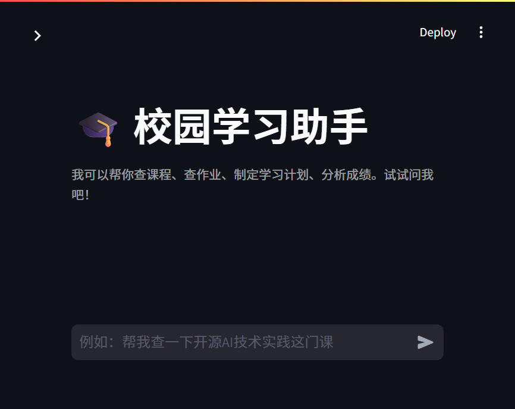
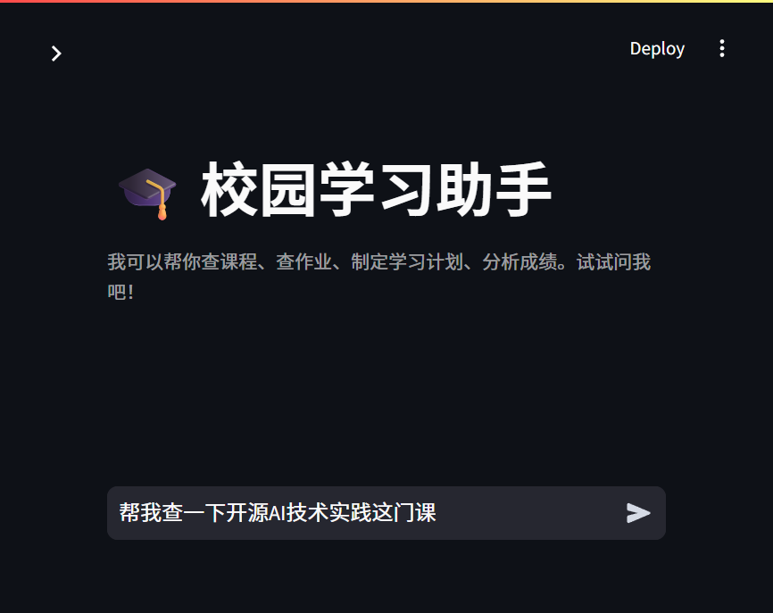
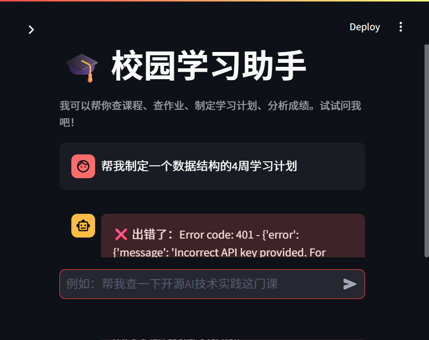

基于 LangChain + 阿里百炼的智能学习助理
《开源 AI 技术实践》期末考查 · 路径 A
汇报人：XXX 学号：XXXXXXXX
2026 年 10 月
「校园学习助手」是一个面向在校大学生的智能体应用。
学生用自然语言提问，智能体自动调用工具完成任务，并把学习计划、成绩报告等产出物保存为文件。
课程助教（属于期末要求第三节推荐选题列表）
| 类别 | 选型 | 说明 |
|---|---|---|
| 大模型 | 阿里百炼 Qwen（qwen-plus） | 通过 OpenAI 兼容接口调用 |
| Agent 框架 | LangChain | create_tool_calling_agent，支持工具调用 |
| Web 界面 | Streamlit | 聊天界面 + 工具调用可视化 |
| 自定义工具 | 4 个 | 课程查询、作业提醒、学习计划生成、成绩分析 |
| Skill | 1 个 | study-plan-writer（学习计划编写规范） |
| 会话持久化 | JSON 文件 | 保存/加载多轮对话历史 |
| 产出物 | Markdown 文件 | 学习计划、成绩报告写入 output 目录 |
满足路径 A 最低配置全部 7 项 + 长期记忆（AGENTS.md）加分项。
用户 → Streamlit 界面 → LangChain Agent → 工具 / 模型 / Skill
↓
output/ 产出文件
app.py：Streamlit 主界面，聊天、工具调用展示、会话管理agent.py：Agent 核心，配置阿里百炼模型、绑定工具、多轮对话tools/：4 个自定义工具skills/study-plan-writer/SKILL.md：学习计划编写规范data/courses.json：示例课程、成绩、作业数据AGENTS.md：长期记忆按课程名 / 教师 / 编号搜索，返回课程信息、上课时间、教学大纲。
query_courses(keyword="开源AI")
查询未来 N 天内即将截止的作业，显示剩余天数。
get_upcoming_assignments(days=30)
根据课程、周数、重点生成学习计划，写入 output 目录。
create_study_plan("数据结构", weeks=4, focus="图")
分析成绩，识别薄弱课程，给出建议，生成分析报告。
analyze_grades(student_id="20240001")
文件位置：skills/study-plan-writer/SKILL.md
系统提示词管全局行为（角色、边界）；Skill 是可复用的领域知识包，独立维护，管具体任务的专业规范。

左侧：可用工具列表、会话管理、模型配置；右侧：聊天对话区。

用户用自然语言输入问题，如「帮我查一下开源AI技术实践这门课」。

Agent 接收消息后自动判断意图并调用对应工具，界面可展开查看工具调用的输入参数与返回结果。
copy .env.example .env
编辑 .env 文件：
DASHSCOPE_API_KEY=sk-你的真实Key LLM_MODEL=qwen-plus OPENAI_BASE_URL=https://dashscope.aliyuncs.com/compatible-mode/v1
streamlit run app.py
| 课堂实验 | 用到的能力 | 本项目增量 |
|---|---|---|
| demo_1 | 模型调用 + Streamlit | 扩展为多工具 Agent |
| demo_2 | OpenAI 兼容接口 + 工具调用 | 落地阿里百炼，4 个工具协同 |
| demo_3 | 云端模型 + 密钥管理 | .env + .gitignore 规范管理 |
| demo_5 | Agent 框架 + Skills + WebUI | 新增学习计划 Skill、会话保存、文件产出 |
tools/study_plan_tools.py — 学习计划生成工具tools/grade_tools.py — 成绩分析工具skills/study-plan-writer/SKILL.md — 学习计划编写规范GitHub 仓库：（填写链接）